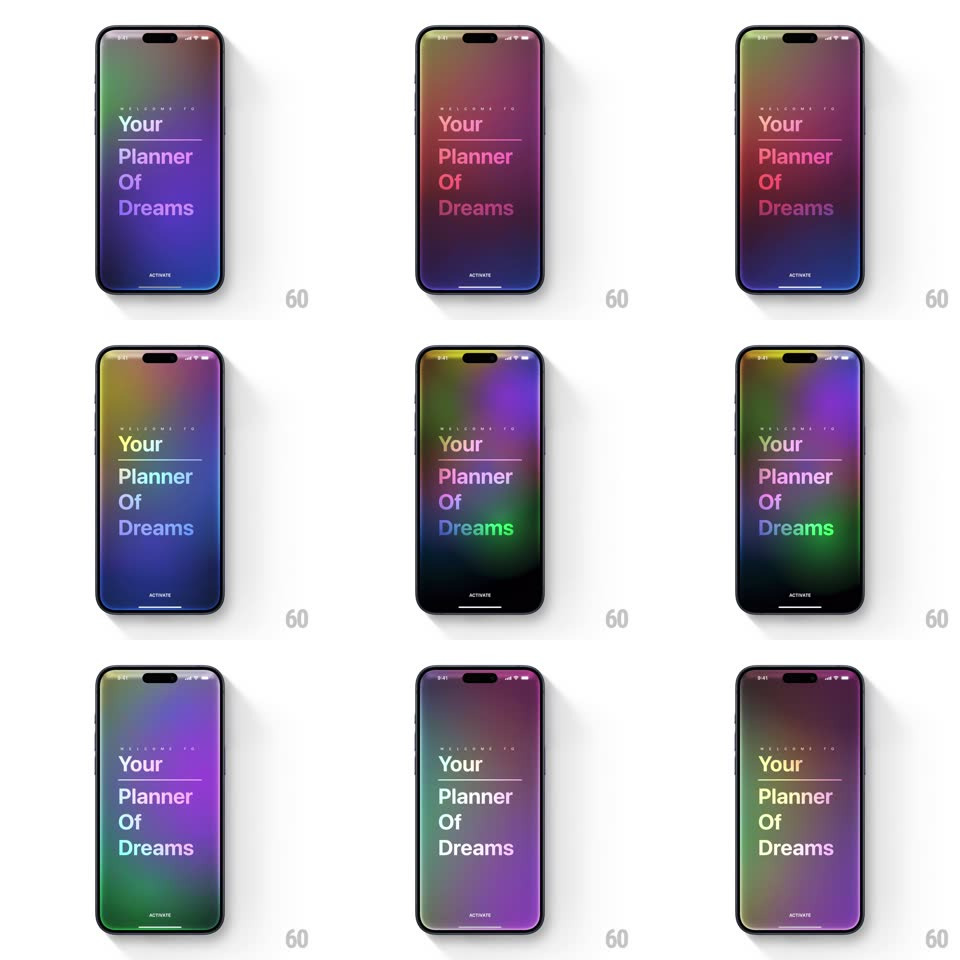

Media
Frame-by-frame

Rebuild this interaction 1:1: Y-Pod's rainbow mesh gradient - a full-screen mesh of color blobs (violet, green, red, amber, blue) that slowly morph and drift behind the onboarding type "Your Planner Of Dreams".

Rebuild this interaction 1:1: Y-Pod's rainbow mesh gradient - a full-screen mesh of color blobs (violet, green, red, amber, blue) that slowly morph and drift behind the onboarding type "Your Planner Of Dreams". ## Integration Integration: stack-agnostic spec - springs given as stiffness/damping, timed motions as duration + curve; map every value to your framework and animation library of choice. ## Scene A full-bleed dark screen carrying a living rainbow mesh gradient: soft-edged color blobs (purple, green, red, orange, blue, yellow) blending into each other. Centered type: "WELCOME TO" eyebrow, then stacked display lines "Your", "Planner", "Of", "Dreams" (with hairline rules), and an "ACTIVATE" label pinned at the bottom. ## Motion spec Pattern: ambient morphing mesh. - 5-7 radial-gradient blobs drift on slow independent paths (each on a 18-30s eased loop, translating and scaling +/- 20%), blended with screen/overlay so colors mix where they cross. - Hue rotates slowly over the full cycle (~60s per revolution) - the palette passes through purple-dominant, green-dominant, red-dominant phases. - The composition never rests: at any moment at least two blobs are mid-drift; motion is slow enough to feel like breathing. - The type stays pinned and static, taking subtle color from the mesh behind (soft-light blend on the hairline rules). - The ACTIVATE label pulses opacity (0.6 -> 1, 2.5s loop). ## Calibration - Blob edges are very soft (large blur falloff) - no hard shapes ever appear. - Keep center-screen luminance low enough that the white type always reads. ## Reduced motion Static mesh frame (mid-cycle palette); no drift or hue rotation. ## Don't miss - The gradient covers the status bar area - truly full bleed. - Type lines have hairline rules between them that pick up the mesh color.